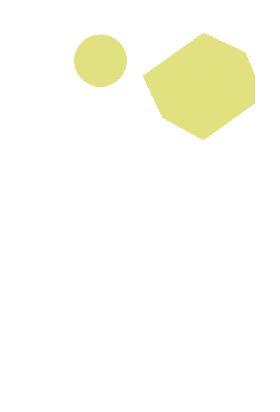
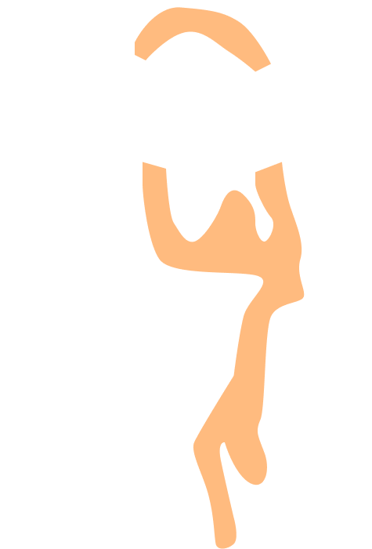
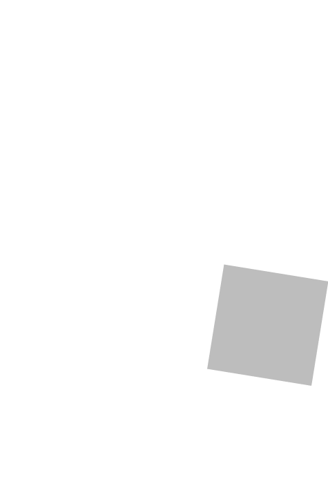
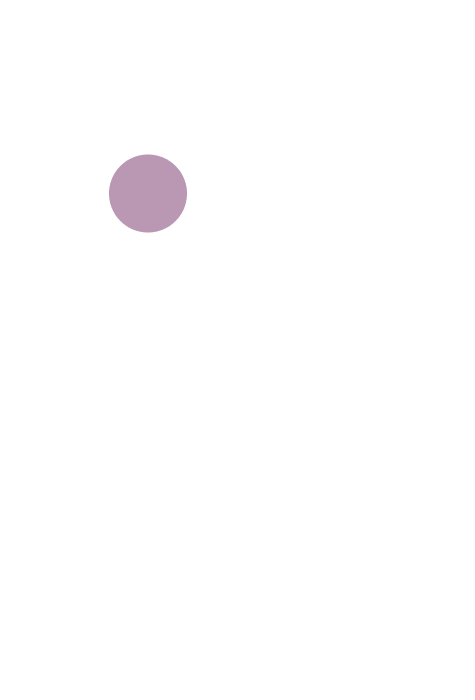
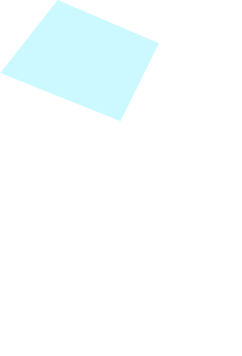
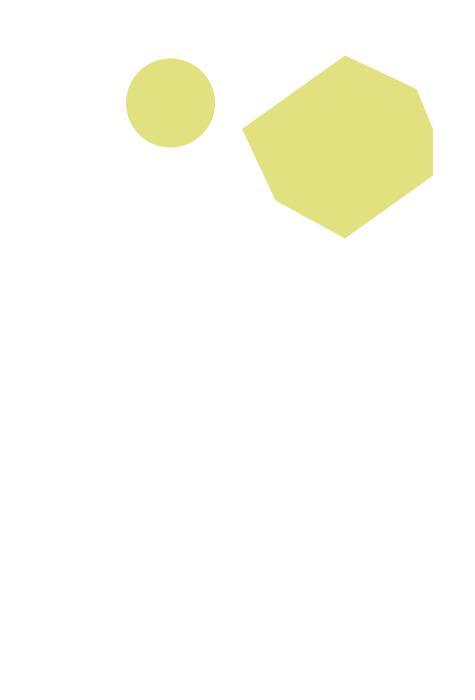
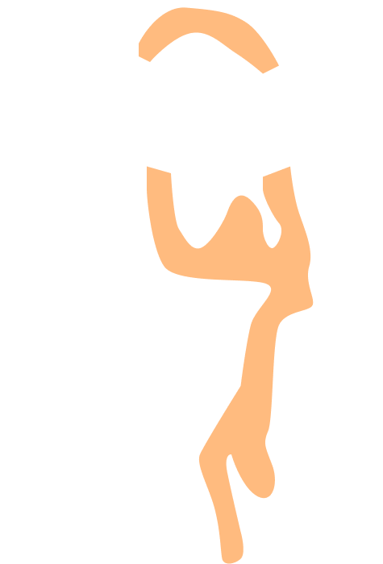
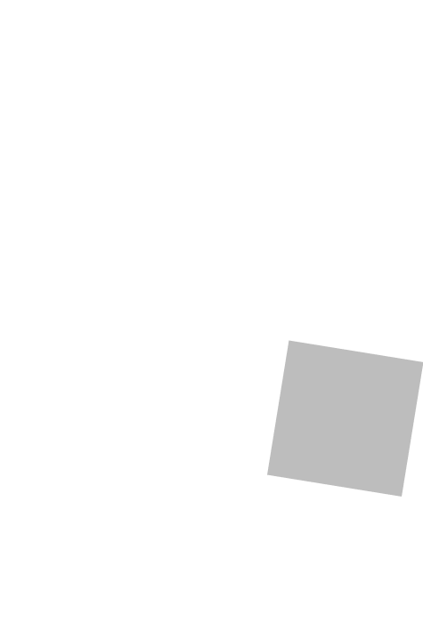
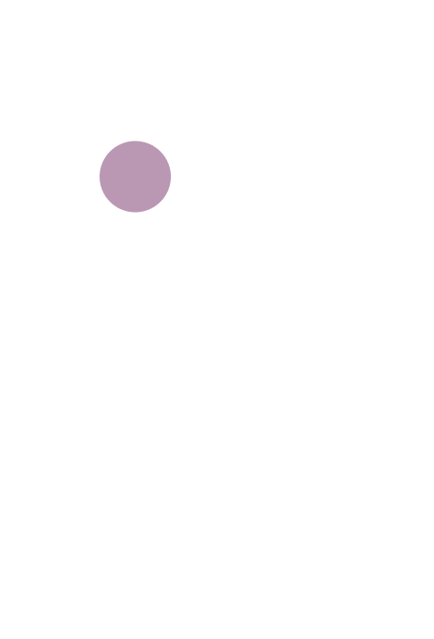
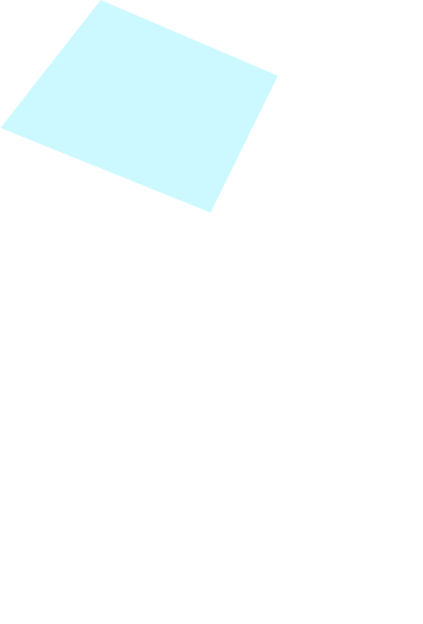

Data-probe 5
23 October 2023 (WS1)
Mendrisio (CH)
Participant 5
She is a service designer working for a consultancy agency with offices in Turin and Switzerland. She has a personal connection to the topic, having experienced urinary tract infections in the past, though she has fortunately recovered. She is interested in exploring how design methodologies can be applied to highly specific and seemingly distant topics, such as health issues, which has motivated her participation.
Written description:
I suffered from cystitis for a fairly prolonged period and once had a urinary tract infection. It was probably due to a very difficult time in my life, to which my body reacted in this way. Associated with this were bad habits such as an inadequate diet and insufficient hydration. Additionally, if the illness is neglected, it tends to come back frequently, which is what happened. The main symptoms were burning, cramps in the lower abdomen, difficulty urinating but at the same time feeling the urgent need to go. Sometimes there were traces of blood in my urine (sorry). It was very painful and debilitating. I consulted my general practitioner, who initially advised me to drink plenty of water and take a cranberry-based supplement. The situation seemed to improve slightly, but soon after, the symptoms returned. As a result, I was prescribed antibiotics, which improved the condition. The episode happened again several times, and I always treated it immediately with antibiotics because they had an immediate effect. The urinary tract infection was diagnosed in the emergency room as a probable consequence of neglected cystitis. I remember that time the doctor did not respond for days, and I had no way to address the situation differently.
Picture of the probe:
 









List of components:
Oral description:
“I do not know if I can explain it well. It is kind of a little monster. I also made it with thread because, for me too, I immediately thought of something temporal, as if it were a process. In my experience, a lot of time has passed, so I feel a bit of tension, but I think for everyone, the more time passes [since recovering], the smaller it seems [the disease]. However, in reality, I was very unwell. I suffered quite a bit from cystitis and also had an infection. The strongest memories I have, which we also looked at today, were initially the cramps combined with burning. I placed two identical balls because, for me, those two discomforts were almost interchangeable. They could be swapped in the timeline. The roughness [sandpaper] represents the discomfort because it makes you feel uneasy, even with something as simple as going out. You already have symptoms, you need to go to the bathroom, and maybe there are people around. For me, discomfort is tied to daily life. As time goes on, I reach the moment when I feel uncertain. I do not know whether I need to go to the bathroom or not. I remember the moment when I could not leave the house. So, I decided to create a cube, and I added a texture with pins. For me, it is a combination of things. As we said earlier, the permeability of the material conveys a perception that is not actually physical. The texture filters little liquid, and the pins represent the persistent burning sensation. Then, this big, messy knot for me is like a fork in the road. Here, I notify the doctor, and something happens. What had happ